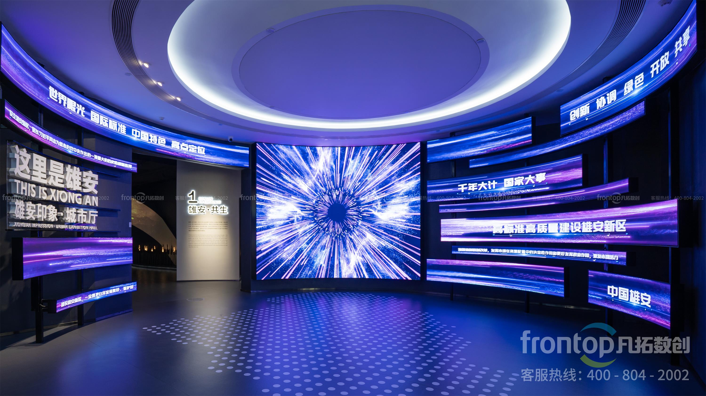
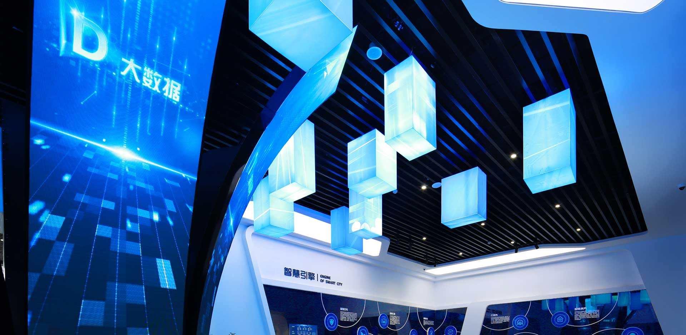
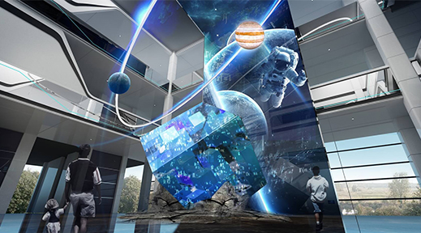
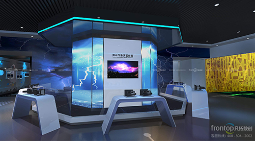

向下滚动

Overview
围绕给排水全生命周期的整体解决方案
从规划设计到施工交付，覆盖入户接驳、计量、雨污分流、泵房与井类设施的标准化建设。
- 市政接驳与计量方案
- 雨污分流改造与复核
- 节点设施标准化施工
Capabilities
核心能力
入户与计量
市政接驳、加压与计量方案设计与实施，确保供水稳定与计量准确。从方案设计到现场实施，全流程把控水质、水压与计量精度。

雨污分流
分流改造、管网复核与溢流风险控制，满足环保与合规要求。通过系统化改造与验收，确保雨污彻底分离，消除混接隐患。
节点设施
泵房、阀门井、检查井标准化施工与验收，保障系统可靠运行。深化图纸设计、工艺交底，确保每一个节点设施符合规范要求。


质量与安全
材料与工艺把控，完工检测与资料移交，全流程质量保障。贯彻安全管理体系，确保施工安全与工程质量双达标。
Process
实施流程
01
现场踏勘
收集现状资料，复核标高与管线条件
02
方案设计
确定给排水方案与主要工艺节点
03
施工准备
报审报验、材料进场与安全技术交底
04
分段实施
节点与管网分阶段施工，动态协调交叉作业
05
联动调试
系统冲洗与压力测试，联动调试并整改
06
验收交付
竣工验收与资料移交，进入运维期
Cases